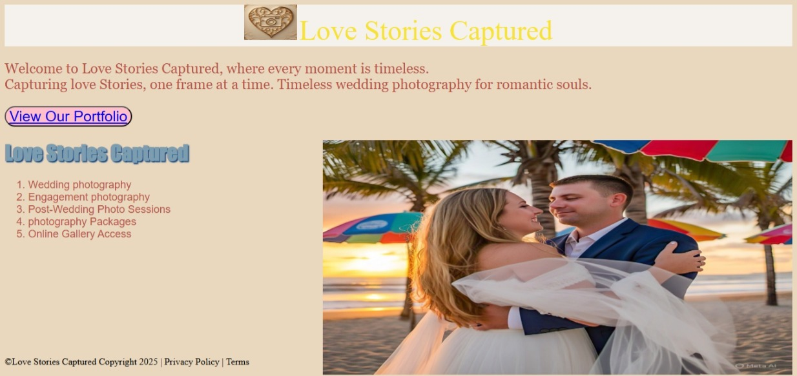
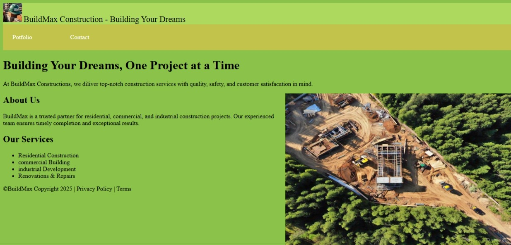
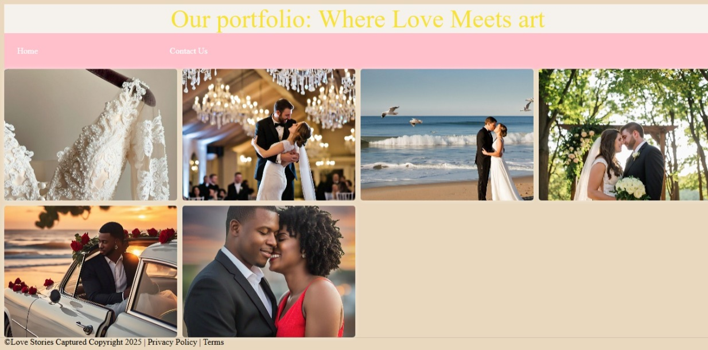

My story
Hi, I'm Katlego Mokone
HTML Developer & Coding Enthusiast
I learned the fundamentals of HTML in high school and have been
self-teaching ever since, driven by a passion for building responsive
websites and solving complex problems. My journey into web development
started with curiosity and evolved into obsession. I spent countless
hours coding, experimenting, and learning from online resources and
tutorials. I'm excited to launch Babyface Studios, making the start of
my career in web development and looking forward to collaborating with
clients to bring their online version to life.
My Mission
As the founder of Katlego Mokone Studios, my mission is to deliver
high-quality web solutions that drive business growth and online success
for my clients. From coding hobbyist to professional web developer, my
passion for creating innovative online experiences has led me to
establish KM Studios - your trusted partner for website needs.
My Values
At Katlego Mokone Studios, I value creativity, reliability, and
transparency. Expect collaborative web development processes and honest
communication from start to finish.
What I bring to the table
Transforming businesses online, one website at a time. My web
development services deliver professional designs, seamless
functionality, and lasting impressions. Elevate your online presence
with my tailored web solutions. From concept to launch, I craft websites
that drive results and exceed expectations.
- Strong foundation in HTML and CSS
- Passion for responsive and user-friendly design
- Ability to work independently and collaboratively
- Continuous learner, always updating skills
- Youthful perspective with fresh ideas and trends
- Creative problem solving skills
- Excellent communication and client support
- Ability to adapt to new technologies quickly
My Portfolio

I’ve designed several brochure-style demo websites for businesses such as gyms and event planning
companies. These demo projects were created to showcase my web design and development skills, and
to reflect the kind of clean, informative, and visually engaging sites I can build for real clients.
Each website is structured to highlight services, introduce the brand, and provide essential
information in a way that’s easy to navigate and visually appealing. While these sites are not
for live businesses, they’re built with real-world functionality and attention to
detail—just like a fully client-ready website.

I’ve designed and developed a series of informational websites for service-based businesses such as construction
companies, landscapers, and electricians. These projects were created as part of my portfolio to demonstrate my
ability to build clean, responsive, and user-friendly websites tailored to industry needs. Each site is structured
to clearly present services, build trust, and encourage customer inquiries—just like a real business site would.
From layout and content to contact forms and mobile optimization, I focus on delivering a complete, functional
user experience.

I’ve also designed some portfolio-style demo websites for businesses such as studios and event planning
companies. This is to again showcase my web design and development skills. By doing this I want to show
my creativity and what I am able to do.
Some other Demo websites I've made